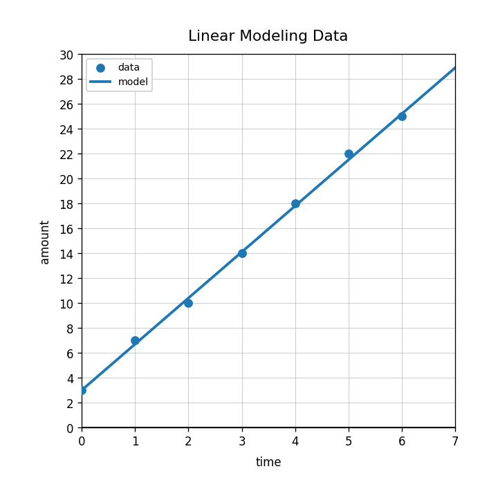
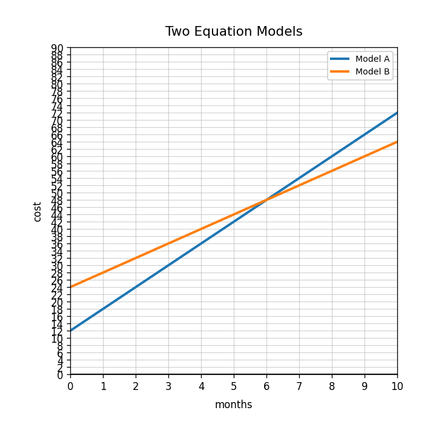

Practice Set 3.5.1
Entry / Early Unit Spiral
Spiral Plan and DoK Balance
Current Focus
Unit 3.5: Linear Systems of Inequalities
mostly DoK 1–2
Unit 3.5: Linear Systems of Inequalities
mostly DoK 1–2
Main Spiral
Unit 2.5: Linear Modeling with Data
4 DoK 1, 2 DoK 2, 1 DoK 3, 1 DoK 4
Unit 2.5: Linear Modeling with Data
4 DoK 1, 2 DoK 2, 1 DoK 3, 1 DoK 4
Earlier Readiness
Unit 1.5: Equations as Models
mostly DoK 1–2
Unit 1.5: Equations as Models
mostly DoK 1–2
Practice Set 1: This is a section-aligned spiral: 3.5 with 2.5 and 1.5. It is not a previous-section spiral.
1.
What does the feasible region represent in a system of linear inequalities?
2.
Use System A. Name the two constraints shown in the legend.
3.
Test whether point $B(6,5)$ satisfies both constraints in System A.
4.
Graph the system and describe the overlap: $$y\le -x+10$$ $$y\ge 3$$
5.
Use the scatterplot. Does the data show a positive association, negative association, or little association?

6.
In a scatterplot comparing time and amount, which quantity is the input?
7.
What is a line of fit used for?
8.
Does a line of fit have to pass through every data point? Explain briefly.
9.
Use the model in the graph. Estimate the output when the input is 7.
10.
The model $y=3.7x+3$ fits a data set. Interpret the 3.7 in context.
11.
A student predicts far outside the data range using a line of fit. Explain why that prediction may be less reliable.
12.
Create a data-modeling question that could be answered with a scatterplot and a line of fit. Explain what the model would help decide.
13.
Which equation represents “6 dollars per month plus a 12 dollar fee”?
- $y=12x+6$
- $y=6x+12$
- $y=18x$
14.
What does the solution to an equation mean in a real-world model?
15.
Solve and interpret: $$5x+20=75$$
16.
Use the graph. What does the intersection of the two models represent?
